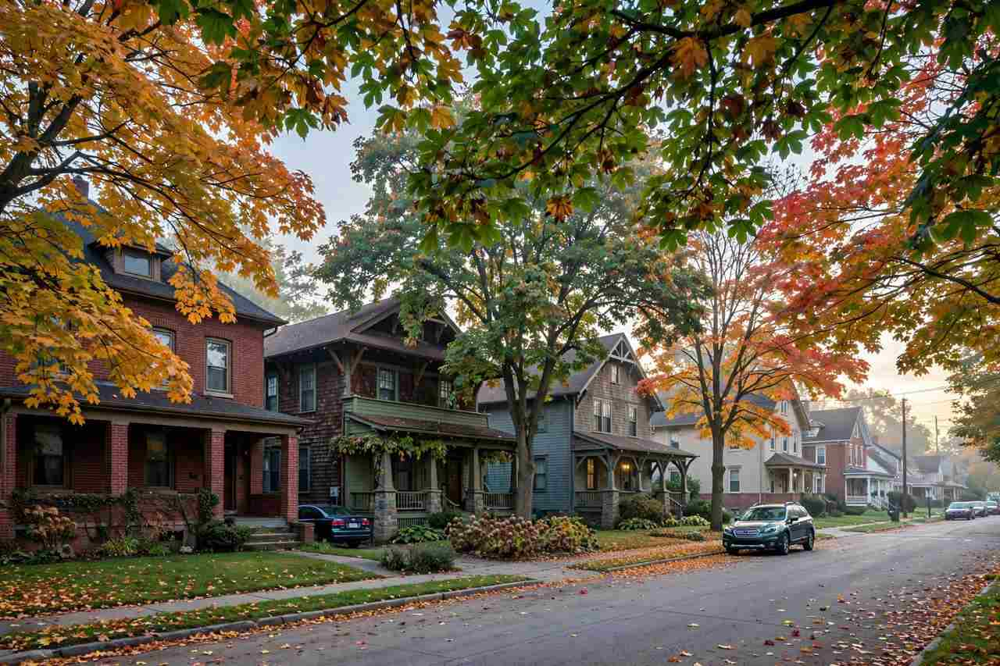

Rodent Control · Hiram, OH
Licensed Rodent Control in Hiram, OH
Rats in the attic or mice in the kitchen in Hiram? Murvo provides same-day rodent control with local crews who inspect first, remove the animals already inside, and seal the entry points they used. Every job is quoted flat-rate in writing before work begins and backed by a written guarantee, covering homes and businesses across Portage County. Service covers 1 ZIP codes across Portage County, including 44234, with same-day appointments where schedules allow.
24/7Availability
1ZIP codes covered
Same-dayResponse
Licensed · Upfront options · Written guarantees · Fully insured
Hiram at a glance
Local Rodent Control for Hiram, OH.
Portage County
Countynortheast Ohio
RegionAkron · 25 mi
Nearest metro135 miles northeast of Columbus
From Columbus1
ZIP codes covered Service by service in Hiram
Rodent Control Services Available in Hiram
The full range of residential and commercial rodent services in Hiram and Portage County - built around the species and housing here, from emergency removal and same-day control to exclusion, proofing, trapping, cleanup, and damage repair. Every service below is quoted flat-rate in writing and backed by our workmanship guarantee.
- 01Rodent Control↗
- 02Rodent Inspection↗
- 03Rodent Removal↗
- 04Rodent Exclusion↗
- 05Rodent Proofing↗
- 06Rat Control↗
- 07Mice Control↗
- 08Mouse Removal↗
- 09Rat Removal↗
- 10Rodent Trapping↗
- 11Rodent Baiting↗
- 12Rodenticide Application↗
- 13Attic Rodent Removal↗
- 14Crawl Space Rodent Removal↗
- 15Wall Rodent Removal↗
- 16Kitchen Rodent Control↗
- 17Garage Rodent Control↗
- 18Commercial Rodent Control↗
- 19Residential Rodent Control↗
- 20Emergency Rodent Removal↗
- 21Same-Day Rodent Control↗
- 22Rodent Damage Repair↗
- 23Rodent Waste Cleanup↗
- 24Rodent Disinfection↗
- 25Rodent Odor Removal↗
- 26Dead Rodent Removal↗
- 27Rodent Dropping Cleanup↗
- 28Rodent Exclusion for Roofs↗
- 29Rodent Exclusion for Vents↗
- 30Rodent Exclusion for Chimneys↗
Rodent Control in Hiram
Rodent Control in Hiram
In vintage duplexes and stone homes, brick bungalows, older single-family homes, and farm and rural properties, rodents rarely use the front door. They follow basement foundations, alley-facing garage doors, sewer laterals, and gaps around utility lines and sills, settle where it stays warm, and expand from there across Portage County homes. Our rodent control pairs careful identification of Norway rat (Rattus norvegicus) and House mouse (Mus musculus) with trapping, sealing, and monitoring, handled by licensed and insured technicians who document each stage for you.
Homeowners in Hiram call Murvo for rodent control because the problem here is specific: Norway rat (Rattus norvegicus) pressure around vintage duplexes and stone homes, brick bungalows, older single-family homes, and farm and rural properties, tight access at basement foundations, alley-facing garage doors, sewer laterals, and gaps around utility lines and sills, and activity that follows the local season. Our Portage County crews diagnose the real source before recommending work, explain the options in plain language, and quote one flat rate in writing. Across Hiram - including Garrettsville, Mantua - every visit is backed by licensed, insured technicians and our written workmanship guarantee. Coverage for rodent control spans 1 ZIP codes in Portage County, including 44234.
Consider how a visit unfolds. Cleanup guidance covers contaminated areas safely, and exclusion work closes the route permanently. Throughout, photographs and written notes keep you informed, so progress is something you can see and verify rather than something you are asked to trust. The technician walks the exterior before touching anything indoors, noting gaps, rub marks, and food sources. Inside, attic and crawl-space evidence shapes the trapping plan, which is adjusted visit by visit as numbers change. Photographs taken at the start make those later comparisons honest, because memory alone tends to blur the details.
Booking takes one call, and same-day appointments are available in most Hiram areas. Your technician inspects first, talks you through the plan in plain language, and only starts once you approve the written quote. Work is carried out in stages, with trap checks and sealing visits booked ahead. At the final visit we walk the finished work together and confirm monitoring is clear. Questions are answered at every stage, day or night.
In most of Hiram, we can offer a same-day appointment for rodent control, and our lines are open 24/7 for urgent cases like scratching in the walls or a rodent in a living area. Your technician inspects first, explains the plan, and quotes a flat rate in writing before any work begins, so help starts fast without surprises. That is also why Murvo pairs removal with exclusion in Hiram - treating the animal without closing basement foundations, alley-facing garage doors, sewer laterals, and gaps around utility lines and sills rarely lasts.
The honest answer is that it depends on species, activity level, and how much sealing your home needs, which is why Murvo inspects first and then gives you a flat-rate quote in writing. For national context only, Angi's 2026 data averages rat and mouse removal and control at $396, typically $189 to $655; that is not a Murvo price, and your written quote is the figure you pay.
Rodent Inspection in Hiram
Rodent Inspection in Hiram
Most Hiram inspections start with uncertainty: a noise, a smell, a few droppings that might be old. Murvo turns that uncertainty into a written record. A rodent inspection checks attic, crawl space, roofline, and foundation, photographs the evidence, and ends with a flat-rate written quote for anything worth fixing.
In Hiram, rodent inspection is not a generic spray-and-go service. Rodents exploit basement foundations, alley-facing garage doors, sewer laterals, and gaps around utility lines and sills in vintage duplexes and stone homes, brick bungalows, older single-family homes, and farm and rural properties, and a fix that ignores those routes does not last. Murvo's Hiram team inspects first, shows you the evidence - droppings, gnaw marks, entry gaps - and then lays out the work with a flat-rate written quote. We serve all of Portage County from Hiram, including Garrettsville, Mantua, and every job is covered by our written workmanship guarantee. Around Aurora, Middlefield, Burton, the pattern is similar: House mouse (Mus musculus) finds basement foundations, alley-facing garage doors, sewer laterals, and gaps around utility lines and sills first, and lasting rodent inspection has to close those routes.
Think of the inspection as three passes. The review pass brings it together: species, likely numbers, contamination, and the order in which fixes should happen. Each pass is photographed, and nothing is recommended without evidence from one of those passes to support it. The exterior pass checks siding, vents, pipe entries, and roof junctions for gaps and rub marks. The interior pass covers attic insulation, crawl-space corners, and kitchen voids for droppings, nests, and gnawing. The report separates what rodents are doing now from what the structure merely allows them to do later.
After booking, we confirm your time window by text or call. Before leaving, they review photos and priorities with you, leave the written findings, and schedule any follow-up work you approve. On arrival, your background-checked technician checks in, protects floors and access points, and works through a set inspection checklist inside and out. The inspection itself is backed by licensed, insured service and our written workmanship guarantee on quoted work.
Inspections are the fastest way we help in Hiram: same-day appointments are available in most areas, and urgent calls are answered 24/7. A typical rodent inspection takes under an hour for most homes, and you leave the visit with photos, written findings, and a flat-rate quote for any work we recommend, so decisions never wait on us. Murvo's Hiram crews explain the finding either way, and the flat-rate quote leaves the decision with you.
Nationally, a professional rodent inspection typically runs $100 to $200 according to Angi's 2026 data, and it is often credited toward the job if you proceed. Murvo confirms your exact rodent inspection price before the visit and quotes any follow-up work as a flat rate in writing after inspection, so the figure you approve is the figure you pay, with no hourly billing.
Rodent Removal in Hiram
Rodent Removal in Hiram
Removal works best when it is species-specific. In Hiram, vintage duplexes and stone homes, brick bungalows, older single-family homes, and farm and rural properties give Norway rat (Rattus norvegicus) and House mouse (Mus musculus) warm voids, stored food, and quiet nesting corners reached through basement foundations, alley-facing garage doors, sewer laterals, and gaps around utility lines and sills. Our licensed, insured technicians assess numbers and access routes first, then set traps on proven runways and return on schedule until catches fall to zero and monitoring stays clear.
Homeowners in Hiram call Murvo for rodent removal because the problem here is specific: Norway rat (Rattus norvegicus) pressure around vintage duplexes and stone homes, brick bungalows, older single-family homes, and farm and rural properties, tight access at basement foundations, alley-facing garage doors, sewer laterals, and gaps around utility lines and sills, and activity that follows the local season. Our Portage County crews diagnose the real source before recommending work, explain the options in plain language, and quote one flat rate in writing. Across Hiram - including Garrettsville, Mantua - every visit is backed by licensed, insured technicians and our written workmanship guarantee. Seasonal timing matters for rodent removal in Hiram: rodents surge in Hiram from October through April.
Removal starts with an assessment of species, numbers, and access routes across attics, wall voids, garages, and kitchens. Removal is followed immediately by entry-point exclusion, because new rodents will replace removed ones through any gap left open, and disinfection is arranged after heavy activity. Once you approve the written quote, technicians set traps along proven runways, check them on schedule, and remove animals promptly and hygienically. Catch records show progress clearly instead of relying on guesswork. Photos document each stage for you.
Call, describe the signs, and we will set a visit window, often for the same day. Return visits are already booked, so clearing, resetting, and progress updates happen without you chasing anyone for news. The first appointment confirms species and numbers, explains the trapping sequence, and produces your written quote. With approval, traps go in immediately. Photographs and catch records are shared as the program runs, giving you visible proof of progress rather than a verbal summary at the end.
For active infestations in Hiram, rodent removal can usually start the same day you call, and our team answers 24/7 when a rodent is loose in a living area. The first visit confirms activity and sets traps straight away; return visits then clear and reset them until monitoring shows the property is completely clear. Murvo's Hiram crews explain the finding either way, and the flat-rate quote leaves the decision with you.
How many animals are active, which species they are, and how much sealing follows removal all shape the price, so we assess first and then quote one flat rate in writing. Angi's 2026 national context — an average of $396 and a typical $189 to $655 range for rat and mouse removal — is provided for comparison only; your written quote is the exact Murvo figure.
Rodent Exclusion in Hiram
Rodent Exclusion in Hiram
Rats can pass through a hole the size of a quarter, and mice through one far smaller, which is why vintage duplexes and stone homes, brick bungalows, older single-family homes, and farm and rural properties in Hiram hide so many working entry points around basement foundations, alley-facing garage doors, sewer laterals, and gaps around utility lines and sills. Our technicians inspect soffits, eaves, pipe entries, foundation cracks, and door sweeps in detail, then prioritize the openings that matter most for Norway rat (Rattus norvegicus) and House mouse (Mus musculus) locally.
When you need rodent exclusion in Hiram, the job starts with what is actually happening in your part of Portage County. Murvo crews work Hiram every week, so they know how Norway rat (Rattus norvegicus) and House mouse (Mus musculus) behave around vintage duplexes and stone homes, brick bungalows, older single-family homes, and farm and rural properties here - and where they get in: basement foundations, alley-facing garage doors, sewer laterals, and gaps around utility lines and sills. We arrive equipped for the full job, confirm the flat rate in writing before work begins, and cover the whole Hiram area, including Garrettsville, Mantua. No call-center runaround and no open-ended hourly billing - just a local crew, a clear plan, and a written quote you approve first. The Hiram crews who handle rodent exclusion also handle the follow-through - proofing, cleanup, and monitoring - so one visit can close the whole problem.
Start with a hard rule: nothing gets sealed while animals remain inside. Each opening receives its own treatment, from packed copper mesh in irregular gaps to hardware cloth across vents and flashing at roof junctions. Door sweeps close the obvious routes, and smaller cracks receive durable sealant chosen for exterior exposure. Technicians confirm the home is clear through trapping and monitoring, then survey the structure junction by junction, because seams between materials open as buildings settle. A written inventory ties each photograph to a location, so future checks can revisit precisely the same points.
Book the survey, and we will work around your schedule, including urgent openings near wiring or food storage. Approved work is completed opening by opening, photographed as it progresses, and reviewed with you before the visit ends. Your technician lists every gap found, explains which are active, and quotes the sealing as one written figure. The finished inventory lists every material used at every opening, which makes later inspections faster and keeps the guarantee easy to enforce.
The first step is a survey, and in Hiram we can often schedule that survey the same day you call about rodent exclusion. Sealing follows once active animals are cleared — nothing is ever sealed inside — and most homes are fully sealed within days, with entry points near wiring or food areas handled first. Around Hiram, vintage duplexes and stone homes, brick bungalows, older single-family homes, and farm and rural properties give rodents the most cover, which is why entry points get checked before traps are set.
For national context, Angi's 2026 data puts basic exclusion at $200 to $600, depending on access and the number of openings. That is a benchmark, not a Murvo price. After surveying your Hiram home, we list every opening that needs sealing and quote one flat rate in writing, so you pay for the work your property actually needs and nothing more.
Rodent Proofing in Hiram
Rodent Proofing in Hiram
In vintage duplexes and stone homes, brick bungalows, older single-family homes, and farm and rural properties, prevention is a checklist hiding in plain sight: light under doors, unscreened vents, branches touching the roof, and clutter against walls near basement foundations, alley-facing garage doors, sewer laterals, and gaps around utility lines and sills. Murvo works through that checklist across Portage County properties, separating simple homeowner fixes from specialist sealing, so money goes only where professional materials genuinely help.
When you need rodent proofing in Hiram, the job starts with what is actually happening in your part of Portage County. Murvo crews work Hiram every week, so they know how Norway rat (Rattus norvegicus) and House mouse (Mus musculus) behave around vintage duplexes and stone homes, brick bungalows, older single-family homes, and farm and rural properties here - and where they get in: basement foundations, alley-facing garage doors, sewer laterals, and gaps around utility lines and sills. We arrive equipped for the full job, confirm the flat rate in writing before work begins, and cover the whole Hiram area, including Garrettsville, Mantua. No call-center runaround and no open-ended hourly billing - just a local crew, a clear plan, and a written quote you approve first. The Hiram crews who handle rodent proofing also handle the follow-through - proofing, cleanup, and monitoring - so one visit can close the whole problem.
Where proofing overlaps with structural exclusion, we use the same chew-resistant materials: copper mesh, hardware cloth, metal flashing, and durable sealants matched to each opening. The written plan distinguishes homeowner tasks from professional work, and seasonal re-checks after completion catch new gaps early, before they can turn into another indoor infestation for your household. Around kitchens, we coordinate sealing behind units and along pipe runs; in garages, we tackle stored-food and clutter harborage directly. That keeps protection current year after year.
Arrange a survey at a time that suits you; there is no emergency, so scheduling stays relaxed. You then receive a written quote separating essential work from optional improvements, and nothing proceeds without your say-so. Your technician walks every side of the property with you, photographs weak points, and talks through the plan in plain language. Staging the work is fine; essential sealing can proceed first while optional improvements wait until a season or budget that suits you better.
Rodent proofing is preventive, so there is rarely a rush, but surveys in Hiram can often be arranged the same day you call, and always within a few days. Most proofing work is completed in a single visit once you approve the plan, and booking before colder weather gives your home protection ahead of the seasonal rush indoors. A Hiram inspection confirms it on site - dropping size, gnaw marks, and entry points tell the story quickly.
We survey your Hiram property first, separate the quick wins you can handle yourself from the specialist sealing, and quote the professional work as one flat rate in writing so spending can be staged. Angi's 2026 national context puts exclusion, the core of proofing, at $200 to $600 for basic work — a benchmark only, not a Murvo price.
Rat Control in Hiram
Rat Control in Hiram
Most Hiram rat calls start with evidence in the attic: droppings too large for mice, greasy rub marks, insulation tunneled overnight. Murvo identifies whether Norway rat (Rattus norvegicus) or House mouse (Mus musculus) is responsible, maps nightly routes, and builds control around trapping and exclusion. One flat-rate written quote is approved before work begins.
When you need rat control in Hiram, the job starts with what is actually happening in your part of Portage County. Murvo crews work Hiram every week, so they know how Norway rat (Rattus norvegicus) and House mouse (Mus musculus) behave around vintage duplexes and stone homes, brick bungalows, older single-family homes, and farm and rural properties here - and where they get in: basement foundations, alley-facing garage doors, sewer laterals, and gaps around utility lines and sills. We arrive equipped for the full job, confirm the flat rate in writing before work begins, and cover the whole Hiram area, including Garrettsville, Mantua. No call-center runaround and no open-ended hourly billing - just a local crew, a clear plan, and a written quote you approve first. In Hiram, rat control calls most often involve vintage duplexes and stone homes, brick bungalows, older single-family homes, and farm and rural properties, where basement foundations, alley-facing garage doors, sewer laterals, and gaps around utility lines and sills decide whether the fix holds.
Safety shapes every placement decision. Traps are positioned away from pet routes and play areas and explained to the household in advance. Where bait is genuinely necessary outdoors, it goes only inside locked, tamper-resistant stations, secured and labeled, never loose, and always alongside trapping and sealing rather than instead of them. Droppings are handled carefully: surfaces are disinfected before cleaning, never dry-swept, because disturbing dry material can spread contamination through the air. Households receive that safety briefing in plain terms before the first station or trap is ever left behind.
Between visits, keep pet food secured and avoid moving any traps, even slightly, since position matters. Your background-checked technician returns on schedule, removes trapped rats promptly, adjusts placements, and reports counts plainly. The program closes only when monitoring confirms activity has ended and exclusion is finished, with your guarantee confirmed in writing at sign-off. Keep gates and access points available on scheduled days where possible, since uninterrupted checks keep the program on its planned timetable.
Call day or night — urgent rat control calls in Hiram are answered 24/7, and a same-day inspection can usually start the program. Pre-baiting begins on that first visit once you approve the written quote, traps are set when rats are feeding confidently, and scheduled checks continue until activity stops. In Portage County, most cases involve the Norway rat (Rattus norvegicus) and the House mouse (Mus musculus), so the inspection focuses on their routes first.
Rat work varies with species, colony size, and how many entry points need sealing, so Murvo inspects first and quotes one flat rate in writing. For national context only, Angi's 2026 data averages rat control and removal at $396, typically $189 to $655. That benchmark is not a Murvo price; the written quote for your Hiram home is the exact figure you pay.
Mice Control in Hiram
Mice Control in Hiram
Most Hiram mouse problems announce themselves in the kitchen first: droppings in a drawer, a chewed corner on stored food, movement behind the kickboard. Murvo surveys those hotspots, clusters traps where mice actually travel, seals gaps, and covers the program with one flat-rate written quote approved in advance.
When you need mice control in Hiram, the job starts with what is actually happening in your part of Portage County. Murvo crews work Hiram every week, so they know how Norway rat (Rattus norvegicus) and House mouse (Mus musculus) behave around vintage duplexes and stone homes, brick bungalows, older single-family homes, and farm and rural properties here - and where they get in: basement foundations, alley-facing garage doors, sewer laterals, and gaps around utility lines and sills. We arrive equipped for the full job, confirm the flat rate in writing before work begins, and cover the whole Hiram area, including Garrettsville, Mantua. No call-center runaround and no open-ended hourly billing - just a local crew, a clear plan, and a written quote you approve first. In Hiram, mice control calls most often involve vintage duplexes and stone homes, brick bungalows, older single-family homes, and farm and rural properties, where basement foundations, alley-facing garage doors, sewer laterals, and gaps around utility lines and sills decide whether the fix holds.
Our integrated approach favors trapping and sealing over baits, with genuinely pet-safe options for family homes. Food-storage advice removes the attraction that drew mice in, and sealing is completed as whole-home proofing so kitchens, attics, and voids stay clear after the program ends. Droppings in cabinets are never dry-swept; following CDC guidance, surfaces are disinfected first so contamination is not spread into the air, and nesting debris is bagged and removed. Catch records show exactly how numbers fall each visit.
During the program, store opened food in sealed containers and keep trap areas undisturbed. Your background-checked technician returns to clear and reset clusters, adjusts placements if the pattern shifts, and completes sealing once numbers fall. At the end you review the catch record together, receive prevention advice, and confirm the written guarantee before close. Prevention notes cover the exact storage and sealing issues found at your home, making them practical rather than generic advice.
Mice programs move quickly in Hiram: a mice control survey can often be arranged the same day you call, and traps are set on that first visit once you approve the quote. Because mice investigate new objects fast, catches usually begin quickly, and scheduled check visits follow until a final confirmation shows activity has fully stopped. A Hiram inspection confirms it on site - dropping size, gnaw marks, and entry points tell the story quickly.
Mouse work is priced by the number of rooms affected and the amount of sealing involved, so Murvo surveys first and quotes one flat rate in writing. For national context only, Angi's 2026 data averages rat and mouse control and removal at $396, typically $189 to $655. That is not a Murvo price; your written quote is exact.
Mouse Removal in Hiram
Mouse Removal in Hiram
Most Hiram removal jobs begin in one room and end with evidence in three, because mice nest close to food and travel widely at night. Murvo surveys room by room, runs traps at every active site, and seals behind the work. The full program is one flat-rate written quote.
In Hiram, mouse removal is not a generic spray-and-go service. Rodents exploit basement foundations, alley-facing garage doors, sewer laterals, and gaps around utility lines and sills in vintage duplexes and stone homes, brick bungalows, older single-family homes, and farm and rural properties, and a fix that ignores those routes does not last. Murvo's Hiram team inspects first, shows you the evidence - droppings, gnaw marks, entry gaps - and then lays out the work with a flat-rate written quote. We serve all of Portage County from Hiram, including Garrettsville, Mantua, and every job is covered by our written workmanship guarantee. The Hiram crews who handle mouse removal also handle the follow-through - proofing, cleanup, and monitoring - so one visit can close the whole problem.
The survey comes first, and it is deliberately thorough. Returns are scheduled tightly: catches are cleared, traps reset, and numbers tracked until they fall to zero and stay there across a confirming check before sealing begins. Lofts, under-floor voids, cabinets, and the spaces behind kitchen units are checked for nests, droppings, and stored food caches. Traps are then set in multiples at proven points, because a single trap rarely reflects colony size. Photographs of nesting sites help here, because they reveal how far activity had spread before trapping began.
For mice active in living areas, call and we will aim for a same-day start where available. Traps are placed only after approval, return visits are booked ahead, and you receive a plain update after every check without chasing. The first visit surveys nesting sites, sets out the multi-trap plan, and confirms your written quote. Rooms are returned to normal use as soon as their checks are clear, and we tell you plainly which areas those are.
For mice active in kitchens or living areas of your Hiram home, mouse removal can often begin the same day you call. That first visit surveys nesting sites and sets traps as soon as you approve the quote, and because mice investigate traps quickly, catches usually start fast. Return visits continue until numbers reach zero. Murvo's Hiram crews explain the finding either way, and the flat-rate quote leaves the decision with you.
Mouse removal cost reflects the number of rooms involved and how much sealing is needed, which is why Murvo surveys first and quotes a flat rate in writing. For national context only, Angi's 2026 data averages rat and mouse removal at $396, typically $189 to $655. That benchmark is not a Murvo price; your written quote covers your exact program.
Rat Removal in Hiram
Rat Removal in Hiram
Most Hiram rat removals fail elsewhere for one reason: the colony was larger than the first visit assumed. Murvo assesses species and scale before trapping, pre-baits on confirmed runways, and returns until monitoring proves the colony gone. A flat-rate written quote is agreed before any trap is set.
In Hiram, rat removal is not a generic spray-and-go service. Rodents exploit basement foundations, alley-facing garage doors, sewer laterals, and gaps around utility lines and sills in vintage duplexes and stone homes, brick bungalows, older single-family homes, and farm and rural properties, and a fix that ignores those routes does not last. Murvo's Hiram team inspects first, shows you the evidence - droppings, gnaw marks, entry gaps - and then lays out the work with a flat-rate written quote. We serve all of Portage County from Hiram, including Garrettsville, Mantua, and every job is covered by our written workmanship guarantee. Coverage for rat removal spans 1 ZIP codes in Portage County, including 44234.
Removal begins by establishing species and the scale of the problem, because a single transient rat and an attic colony need very different programs. Technicians pre-bait unset traps on confirmed runways so cautious rats feed without fear, then set them, returning frequently to remove animals hygienically and adjust placements as activity shifts. Attic colonies may need dedicated attic work, while a carcass in a void calls for retrieval and odor treatment. Sealing follows once the property is clear. Nothing is rushed at this stage.
After booking, we confirm access needs for the attic, basement, or outbuildings so no time is wasted. Follow-up visits run on schedule until catches stop, then sealing and sanitation are completed. A final monitoring period confirms the home is clear before sign-off. On the first visit, your background-checked technician sets out the plan and begins pre-baiting once you approve the written quote. Progress is reported to you after every single visit.
In Hiram, rat removal can usually start the same day you call, with 24/7 answering for rats active in living areas. Pre-baiting begins on the first visit after you approve the written quote, and traps are set once rats feed confidently, typically within days. Repeat visits then run frequently until monitoring confirms the colony is gone. In Portage County, most cases involve the Norway rat (Rattus norvegicus) and the House mouse (Mus musculus), so the inspection focuses on their routes first.
Colony size, access, and the sealing needed afterwards drive the price, so Murvo assesses the property first and quotes a flat rate in writing covering the full program. Angi's 2026 data, for national context only, averages rat removal at $396 and typically ranges from $189 to $655; that is a benchmark, not a Murvo price.
Rodent Trapping in Hiram
Rodent Trapping in Hiram
For Hiram households who want a poison-free route, trapping delivers measurable results without chemicals in the home. Each catch is recorded by location, building a picture of movement through vintage duplexes and stone homes, brick bungalows, older single-family homes, and farm and rural properties via basement foundations, alley-facing garage doors, sewer laterals, and gaps around utility lines and sills until numbers fall to zero. Murvo's licensed, insured technicians then recommend exclusion sealing and cleanup, and the whole program is backed by a written workmanship guarantee.
In Hiram, rodent trapping is not a generic spray-and-go service. Rodents exploit basement foundations, alley-facing garage doors, sewer laterals, and gaps around utility lines and sills in vintage duplexes and stone homes, brick bungalows, older single-family homes, and farm and rural properties, and a fix that ignores those routes does not last. Murvo's Hiram team inspects first, shows you the evidence - droppings, gnaw marks, entry gaps - and then lays out the work with a flat-rate written quote. We serve all of Portage County from Hiram, including Garrettsville, Mantua, and every job is covered by our written workmanship guarantee. The Hiram crews who handle rodent trapping also handle the follow-through - proofing, cleanup, and monitoring - so one visit can close the whole problem.
A program opens with mapping, not trap placement. Technicians read droppings, rub marks, and gnaw damage to reconstruct nightly routes through attics, basements, and kitchens. Devices are then selected for each location: snap traps for decisive results, multi-catch units on busy mouse routes, live-capture where release is preferred. For rats, pre-baiting runs several days before traps are set, the step most amateur attempts skip. Every device is numbered, recorded, and revisited on a fixed schedule. The map also prevents a common mistake: removing a device that looks empty while its route is still active.
Between checks, leave devices untouched and note any new noises or droppings by room; that information sharpens the next visit. Your background-checked technician adjusts placements as the pattern changes and removes catches promptly and hygienically. The program ends with a clear monitoring result, a written summary of what was caught where, and sealing advice. The summary also notes which routes stayed busiest, information that makes any later exclusion work faster and more precisely targeted.
In Hiram, a rodent trapping program can usually start the same day you call, with traps placed or pre-baiting begun on the first visit after you approve the quote. Mice often investigate within the first night, while wary rats need a few days of pre-baiting before traps are set. Scheduled checks then keep the program moving until numbers reach zero. Around Hiram, vintage duplexes and stone homes, brick bungalows, older single-family homes, and farm and rural properties give rodents the most cover, which is why entry points get checked before traps are set.
Trapping is usually quoted as part of a complete removal program rather than by the trap, and the price depends on species, activity level, and how many check visits are needed. Murvo inspects first and quotes one flat rate in writing covering the program and its check visits, so there are no per-visit surprises and no hourly billing at any stage.
Rodent Baiting in Hiram
Rodent Baiting in Hiram
What rules govern bait near children, pets, and wildlife in Ohio? Strict ones, and Murvo follows them plainly. State rules restrict anticoagulant rodenticides, and Murvo applies the same care everywhere: no loose bait, no open trays, no unmonitored stations. Before placement, you review locations, risks, and alternatives with a licensed technician.
In Hiram, rodent baiting is not a generic spray-and-go service. Rodents exploit basement foundations, alley-facing garage doors, sewer laterals, and gaps around utility lines and sills in vintage duplexes and stone homes, brick bungalows, older single-family homes, and farm and rural properties, and a fix that ignores those routes does not last. Murvo's Hiram team inspects first, shows you the evidence - droppings, gnaw marks, entry gaps - and then lays out the work with a flat-rate written quote. We serve all of Portage County from Hiram, including Garrettsville, Mantua, and every job is covered by our written workmanship guarantee. In Hiram, rodent baiting calls most often involve vintage duplexes and stone homes, brick bungalows, older single-family homes, and farm and rural properties, where basement foundations, alley-facing garage doors, sewer laterals, and gaps around utility lines and sills decide whether the fix holds.
Where baiting is not appropriate indoors, we say so, and recommend trapping first followed by proofing of gaps around pipes, vents, and doors. That exclusion-first approach reduces reliance on bait over time, which matters for households with children, pets, or visiting wildlife in Hiram. Consumption records from each visit show whether activity is falling, holding, or moving, guiding whether stations stay, move, or come out entirely in favor of sealing and trapping alone. You receive those records after every monitoring visit.
During monitoring, keep station areas undisturbed and tell us about any change in droppings or sightings. Your technician checks consumption on schedule, reports the trend plainly, and adjusts or removes stations as evidence dictates. The program closes with stations out, sealing recommendations confirmed, and the full record, including photographs, left with you in writing. If your household circumstances change, tell us; station locations and the wider plan can be reviewed and adjusted at the next check.
In Hiram, rodent baiting starts with an inspection visit we can often arrange the same day you call. Stations are only placed after activity is mapped and you approve the written quote and each location, so setup is deliberate rather than rushed. Monitoring visits then run on a fixed schedule until consumption stops and activity is confirmed clear. A Hiram inspection confirms it on site - dropping size, gnaw marks, and entry points tell the story quickly.
How many locked stations your property needs and how long monitoring runs determine the cost, so Murvo inspects and maps activity first, then quotes one flat rate in writing covering placement and scheduled checks. There are no per-visit surprises, and because the approach is exclusion-first, the aim is to reduce and eventually remove stations rather than maintain them forever.
Rodenticide Application in Hiram
Rodenticide Application in Hiram
Most Hiram applications begin with a conversation about why chemicals may not be needed at all. Murvo inspects first, leads with trapping and exclusion, and treats rodenticide application as a last resort for confirmed activity. If treatment proceeds, one flat-rate written quote covers locked stations, monitoring, and removal.
In Hiram, rodenticide application is not a generic spray-and-go service. Rodents exploit basement foundations, alley-facing garage doors, sewer laterals, and gaps around utility lines and sills in vintage duplexes and stone homes, brick bungalows, older single-family homes, and farm and rural properties, and a fix that ignores those routes does not last. Murvo's Hiram team inspects first, shows you the evidence - droppings, gnaw marks, entry gaps - and then lays out the work with a flat-rate written quote. We serve all of Portage County from Hiram, including Garrettsville, Mantua, and every job is covered by our written workmanship guarantee. Seasonal timing matters for rodenticide application in Hiram: rodents surge in Hiram from October through April.
Documentation runs through the whole program. Dead rodents are retrieved promptly where accessible. Meanwhile exclusion work proceeds in parallel, sealing entry points so dependence on chemical control shrinks with each visit rather than becoming permanent. Every product is recorded with its label and safety information, which stays with you. Stations are positioned away from areas children and pets use, checked against Ohio restrictions before selection, and removed once monitoring confirms activity has ended. State rules are rechecked whenever a product changes, since permitted options can differ between jurisdictions and seasons.
Start with the inspection, often bookable the same day, and expect alternatives explained before products are discussed. Application happens only after approval, with monitoring visits scheduled and a clear stopping point agreed in advance. Your licensed technician confirms whether treatment is justified, reviews safety information with you, and provides the written quote. You can pause or stop the program at any point, and stopping triggers removal of stations rather than leaving them behind unattended.
No responsible rodenticide application starts without an inspection, and in Hiram that inspection can often be scheduled the same day you call. If treatment is justified and you approve the written quote, locked stations are installed on that visit. Monitoring then runs on schedule, and treatment stops as soon as the data shows activity has ended. In Portage County, most cases involve the Norway rat (Rattus norvegicus) and the House mouse (Mus musculus), so the inspection focuses on their routes first.
Application cost depends on the number of locked stations, the product required under Ohio rules, and how long monitoring runs. Murvo inspects first, explains whether trapping or exclusion could avoid chemical control entirely, and then quotes one flat rate in writing before work begins. The quote covers scheduled monitoring visits, so there are no per-visit surprises later.
Attic Rodent Removal in Hiram
Attic Rodent Removal in Hiram
Scratching overhead at night in Hiram usually means Norway rat (Rattus norvegicus) climbing to the roofline or House mouse (Mus musculus) slipping through vent gaps into your attic. Murvo's attic rodent removal inspects the attic, roof, and eaves, traps active animals up there, and seals the roofline behind them. Same-day visits are prioritized when chewed wiring is found, because that damage is a genuine fire risk.
In Hiram, attic rodent removal is not a generic spray-and-go service. Rodents exploit basement foundations, alley-facing garage doors, sewer laterals, and gaps around utility lines and sills in vintage duplexes and stone homes, brick bungalows, older single-family homes, and farm and rural properties, and a fix that ignores those routes does not last. Murvo's Hiram team inspects first, shows you the evidence - droppings, gnaw marks, entry gaps - and then lays out the work with a flat-rate written quote. We serve all of Portage County from Hiram, including Garrettsville, Mantua, and every job is covered by our written workmanship guarantee. Around Aurora, Middlefield, Burton, the pattern is similar: House mouse (Mus musculus) finds basement foundations, alley-facing garage doors, sewer laterals, and gaps around utility lines and sills first, and lasting attic rodent removal has to close those routes.
Attic work follows Inspect, Remove, Exclude, Clean, and Monitor. A detailed inspection covers the attic, roof, and eaves, identifying species, nests, droppings, and gnawed cables. Targeted, humane trapping is then set in the attic to clear active animals quickly, with checks on schedule. Once clear, roofline entry points are sealed with metal mesh and flashing as part of wider proofing, and dropping cleanup and disinfection are arranged where insulation is contaminated. Monitoring traps stay briefly after sealing to confirm the attic is empty and quiet.
After booking, we confirm safe attic access and any pets or stored items to work around. On arrival, your background-checked technician inspects, explains the plan in plain language, and starts trapping once you approve the written quote. Follow-up visits are booked ahead to clear traps and complete sealing. A final monitoring check and walkthrough confirm the result before we close the job. Insulation and wiring findings are reported to you too.
Overhead scratching in Hiram often gets a same-day attic rodent removal visit, and attics with chewed wiring are prioritized because of the fire risk. Trapping starts on the first visit once you approve the written quote, checks run on schedule, and most attics are cleared and sealed within days. Monitoring stays in place briefly afterwards to confirm nothing remains inside. In Portage County, most cases involve the Norway rat (Rattus norvegicus) and the House mouse (Mus musculus), so the inspection focuses on their routes first.
Activity levels, roofline sealing, and whether contaminated insulation needs cleanup all affect attic pricing, so Murvo inspects first and quotes one flat rate in writing for the removal program. Cleanup options are priced separately in writing before you decide, so nothing is added once work is underway.
Crawl Space Rodent Removal in Hiram
Crawl Space Rodent Removal in Hiram
Droppings under the house, a torn vapor barrier, and smells drifting up through the floors are classic signs rodents are living beneath your Hiram home. Murvo's crawl space rodent removal inspects the under-home space, traps active animals there, and seals foundation vents and gaps. Because activity below often connects to the attic through wall voids, we trace the full route.
Homeowners in Hiram call Murvo for crawl space rodent removal because the problem here is specific: Norway rat (Rattus norvegicus) pressure around vintage duplexes and stone homes, brick bungalows, older single-family homes, and farm and rural properties, tight access at basement foundations, alley-facing garage doors, sewer laterals, and gaps around utility lines and sills, and activity that follows the local season. Our Portage County crews diagnose the real source before recommending work, explain the options in plain language, and quote one flat rate in writing. Across Hiram - including Garrettsville, Mantua - every visit is backed by licensed, insured technicians and our written workmanship guarantee. Homes near Aurora tend to show activity first in Hiram, which is why inspections start with basement foundations, alley-facing garage doors, sewer laterals, and gaps around utility lines and sills.
Cleanup below a home follows CDC guidance: droppings and nesting debris are never dry-swept, because disturbing them can spread contamination; surfaces are disinfected first, then waste is bagged and removed by technicians in protective equipment. Photographs of finished sealing are supplied with your guarantee paperwork, and access panels are refitted securely after every visit. We also trace connections upward through wall voids, since treating the crawl space alone misses rodents traveling to the attic. Moisture problems found are reported with practical recommendations.
Book crawl space rodent removal in Hiram and we will schedule an under-home inspection, often within days and sooner for strong odors or heavy activity. Your technician photographs conditions below, explains the plan, and confirms a flat-rate written quote before trapping starts. Clearance, vent screening, and cleanup then follow in sequence. Monitoring confirms the space is quiet, and photographs of finished sealing accompany your guarantee. No extra vents are billed beyond the agreed scope.
For crawl space rodent removal in Hiram, inspections are usually arranged within a few days — and sooner when odors are drifting into living areas or activity sounds heavy. Trapping begins on the first visit after you approve the written quote, clearance and sealing follow in sequence, and monitoring stays in place until the space below is confirmed quiet. In Portage County, activity follows the local season, so timing the work matters as much as the method.
Access, the number of vents and gaps to seal, and whether waste cleanup is required all shape crawl-space pricing, so Murvo inspects first and quotes one flat rate in writing. Cleanup options are priced in writing before you decide whether to include them, and there are no surprise charges for extra vents within the agreed scope.
Wall Rodent Removal in Hiram
Wall Rodent Removal in Hiram
Scratching inside a wall in Hiram is maddening precisely because you cannot see what is causing it. Murvo's wall rodent removal locates activity using listening, thermal clues, and entry tracing, then places trapping at void access points to draw animals out without unnecessary demolition. A flat-rate written quote comes first, and access cuts are only made when truly needed.
When you need wall rodent removal in Hiram, the job starts with what is actually happening in your part of Portage County. Murvo crews work Hiram every week, so they know how Norway rat (Rattus norvegicus) and House mouse (Mus musculus) behave around vintage duplexes and stone homes, brick bungalows, older single-family homes, and farm and rural properties here - and where they get in: basement foundations, alley-facing garage doors, sewer laterals, and gaps around utility lines and sills. We arrive equipped for the full job, confirm the flat rate in writing before work begins, and cover the whole Hiram area, including Garrettsville, Mantua. No call-center runaround and no open-ended hourly billing - just a local crew, a clear plan, and a written quote you approve first. Coverage for wall rodent removal spans 1 ZIP codes in Portage County, including 44234.
Once the void is clear, we apply proofing to wall entry routes, sealing baseboard and pipe gaps linked to kitchen activity so the route cannot reopen. If a rodent has died in the wall, retrieval is followed by sanitation: contaminated material is never dry-swept, surfaces are disinfected first following CDC guidance, and odor treatment is applied so other rodents are not attracted back. Monitoring at key access points then confirms the void stays quiet. Connected voids are checked before we finish.
Between visits, note the times and rooms where sounds continue, since that pattern guides adjustments. Sign-off happens only when monitoring confirms silence, sealing and sanitation are complete, and your guarantee paperwork is confirmed in writing. Your background-checked technician clears traps, checks connected voids, and runs quiet checks at varied times of day. Silence is checked more than once before sign-off, because a single quiet evening can mislead when an animal simply moves elsewhere.
In Hiram, wall rodent removal locating visits are often available the same day you call, especially for persistent scratching keeping you awake. Trapping is set at access points on that first visit once you approve the written quote, and because rodents travel the void nightly, results usually follow within days, confirmed by quiet-wall checks before we sign off. In Portage County, activity follows the local season, so timing the work matters as much as the method.
Wall work pricing depends on how precisely activity can be located and whether a minimal access cut is needed, which is why Murvo locates the activity first and quotes a flat rate in writing. That way wall access work never becomes an open-ended bill, and the quote covers the trapping, sealing, and monitoring described in your plan.
Kitchen Rodent Control in Hiram
Kitchen Rodent Control in Hiram
Kitchens in vintage duplexes and stone homes, brick bungalows, older single-family homes, and farm and rural properties offer rodents food, water and warmth behind fridges, ovens and sinks. Murvo's kitchen rodent control in Hiram starts behind those appliances, removes the animals without loose poison near food, and leaves simple hygiene notes covering bins, pet bowls and rarely moved appliances. Background-checked technicians carry out every visit.
In Hiram, kitchen rodent control is not a generic spray-and-go service. Rodents exploit basement foundations, alley-facing garage doors, sewer laterals, and gaps around utility lines and sills in vintage duplexes and stone homes, brick bungalows, older single-family homes, and farm and rural properties, and a fix that ignores those routes does not last. Murvo's Hiram team inspects first, shows you the evidence - droppings, gnaw marks, entry gaps - and then lays out the work with a flat-rate written quote. We serve all of Portage County from Hiram, including Garrettsville, Mantua, and every job is covered by our written workmanship guarantee. In Hiram, kitchen rodent control calls most often involve vintage duplexes and stone homes, brick bungalows, older single-family homes, and farm and rural properties, where basement foundations, alley-facing garage doors, sewer laterals, and gaps around utility lines and sills decide whether the fix holds.
First we map the kitchen: droppings in drawers, gnaw marks on packaging, rub marks and the gaps rodents use around pipes and appliances. Because kitchen activity usually starts elsewhere, we follow routes into basements, garages and wall voids before treating the symptom alone. Entry gaps are sealed, contaminated surfaces disinfected, and simple food-storage changes agreed with you, such as sealed containers, fixed drips and crumbs cleared behind appliances. Trapping is discreet and positioned away from counters and food storage. Each stage is recorded on your written service report.
Booking takes one call. We return to check traps and monitoring points, adjust placement if needed, and confirm the kitchen is clear. Every stage is covered by our written workmanship guarantee. Your technician arrives as arranged, confirms where rodents are feeding and traveling, and talks you through a clear plan with one written flat-rate price. Traps are set discreetly, entry gaps sealed and food areas cleaned down. Nothing starts until you have approved the written quote.
Our phone lines are open 24/7, and kitchen cases involving droppings near food preparation areas are treated as a priority. In many Hiram cases we can arrange a same-day visit, subject to technician availability. Call, describe what you have found, and we will offer the earliest appointment we can. In Portage County, most cases involve the Norway rat (Rattus norvegicus) and the House mouse (Mus musculus), so the inspection focuses on their routes first.
Cost depends on how many rodents are active, where they are entering, and how much sealing and cleanup the kitchen needs. Murvo inspects first, then gives one flat-rate written quote covering trapping, sealing and follow-up monitoring, with no hourly billing or add-on surprises. You approve the full price before any work begins, and the quote is backed by our written workmanship guarantee.
Garage Rodent Control in Hiram
Garage Rodent Control in Hiram
Cold weather pushes rodents toward the garage first. From there, a gap at basement foundations, alley-facing garage doors, sewer laterals, and gaps around utility lines and sills can lead straight into the house. In Hiram, we inspect the full perimeter, clear nesting and activity, then proof the openings so vehicles, tools and stored belongings are no longer sharing space with unwanted animals overnight.
In Hiram, garage rodent control is not a generic spray-and-go service. Rodents exploit basement foundations, alley-facing garage doors, sewer laterals, and gaps around utility lines and sills in vintage duplexes and stone homes, brick bungalows, older single-family homes, and farm and rural properties, and a fix that ignores those routes does not last. Murvo's Hiram team inspects first, shows you the evidence - droppings, gnaw marks, entry gaps - and then lays out the work with a flat-rate written quote. We serve all of Portage County from Hiram, including Garrettsville, Mantua, and every job is covered by our written workmanship guarantee. Homes near Aurora tend to show activity first in Hiram, which is why inspections start with basement foundations, alley-facing garage doors, sewer laterals, and gaps around utility lines and sills.
Door corners get checked before anything else, because daylight showing at the base often marks the main entrance. Nesting comes out safely, entry points get sealed with sturdy materials, and the door sweep is addressed where it has failed. From there we follow droppings and rub marks along walls, behind storage and toward utility lines entering the house. Traps sit on those travel lines, not scattered at random. Final monitoring tells us whether the garage is truly quiet or whether activity is still passing through.
After booking, we agree access arrangements for vehicles and stored items. Your technician inspects, quotes in writing, and only starts once you approve. Removal, proofing and cleanup follow in a sensible order, so sealing never traps animals inside. Monitoring continues afterwards, and we report progress at each visit. If activity persists within the guarantee terms, we return and address it, as set out in your written guarantee. The plan is agreed with you before any work begins.
Our phones are answered 24/7, and garages with active nesting, damaged wiring or movement into the house are treated as urgent. Depending on technician schedules, a same-day appointment in Hiram is often possible. Describe the signs when you call and we will offer the earliest visit we can arrange. That is also why Murvo pairs removal with exclusion in Hiram - treating the animal without closing basement foundations, alley-facing garage doors, sewer laterals, and gaps around utility lines and sills rarely lasts.
As a national benchmark, Angi's 2026 data shows rat extermination ranging from $189-$655, with an average of $396; that is context only, not a Murvo price. Garage work varies with size, activity and the proofing doors and walls require. After inspecting, Murvo quotes one flat rate in writing for trapping, nest removal, sealing and monitoring, for your approval before anything starts.
Commercial Rodent Control in Hiram
Commercial Rodent Control in Hiram
Loading doors rarely close perfectly, and bin stores rarely stay clean for long. Those two facts explain much commercial rodent pressure in Portage County. Our commercial rodent control in Hiram tackles docks, waste areas, kitchens and storage together, with scheduled monitoring and written reports that show managers exactly what changed between every single visit.
Homeowners in Hiram call Murvo for commercial rodent control because the problem here is specific: Norway rat (Rattus norvegicus) pressure around vintage duplexes and stone homes, brick bungalows, older single-family homes, and farm and rural properties, tight access at basement foundations, alley-facing garage doors, sewer laterals, and gaps around utility lines and sills, and activity that follows the local season. Our Portage County crews diagnose the real source before recommending work, explain the options in plain language, and quote one flat rate in writing. Across Hiram - including Garrettsville, Mantua - every visit is backed by licensed, insured technicians and our written workmanship guarantee. The Hiram crews who handle commercial rodent control also handle the follow-through - proofing, cleanup, and monitoring - so one visit can close the whole problem.
What inspectors want is a system, and that is how we work. Staff learn which early signs to report and whom to call. Visits run outside peak trading where possible, and any live sighting during service gets handled quietly. Risks get ranked by area, from food storage to waste handling, so urgent gaps close first. Over time, trend notes show whether pressure is falling, holding or shifting to a new area, letting you adjust deliveries, storage or building repairs before a minor issue becomes a failed audit.
After you make contact, a surveyor visits at a time that suits trading, inspects the whole site and identifies risks. Approved work begins discreetly, with reports after every visit for your audit file. Monitoring continues on schedule, trends are reviewed with you, and the program adjusts as activity falls. You receive a written proposal with flat-rate pricing for initial work before anything starts. Emergency response is available 24/7 for urgent sightings.
Commercial calls are taken 24/7, and a live sighting during trading is handled as an emergency with discretion to protect customers and reputation. The visit we can offer in Hiram depends on technician availability, and we will always give you the earliest one possible. We can also advise on immediate steps to protect stock and your audit position while you wait. Around Hiram, vintage duplexes and stone homes, brick bungalows, older single-family homes, and farm and rural properties give rodents the most cover, which is why entry points get checked before traps are set.
Commercial pricing depends on site size, sector, activity levels and how much exclusion and monitoring the site needs. Restaurants, warehouses and food premises are scoped individually after a survey. Murvo quotes a flat rate in writing for initial work, or a clear scheduled-service price for ongoing programs, before anything begins. There are no vague charges, and reports are included for your audit file.
Residential Rodent Control in Hiram
Residential Rodent Control in Hiram
For families in vintage duplexes and stone homes, brick bungalows, older single-family homes, and farm and rural properties, the worry is understandable: droppings near food, noises at night, children and pets underfoot. Our residential rodent control in Hiram uses careful, pet-conscious methods, explains each step plainly, and keeps loose poison out of indoor areas. Licensed, insured technicians handle the visit from first inspection through final monitoring check.
When you need residential rodent control in Hiram, the job starts with what is actually happening in your part of Portage County. Murvo crews work Hiram every week, so they know how Norway rat (Rattus norvegicus) and House mouse (Mus musculus) behave around vintage duplexes and stone homes, brick bungalows, older single-family homes, and farm and rural properties here - and where they get in: basement foundations, alley-facing garage doors, sewer laterals, and gaps around utility lines and sills. We arrive equipped for the full job, confirm the flat rate in writing before work begins, and cover the whole Hiram area, including Garrettsville, Mantua. No call-center runaround and no open-ended hourly billing - just a local crew, a clear plan, and a written quote you approve first. Seasonal timing matters for residential rodent control in Hiram: rodents surge in Hiram from October through April.
We treat the home as a system, because rodents rarely stay in one room. Advice on food storage, pet food and garden attractants is included, so the conditions that drew rodents in are removed alongside the rodents themselves. Technicians trace routes between roof, walls, garage and kitchen, set traps along real runways, and seal entry points with durable, gnaw-resistant materials once animals are out. Contaminated nesting material is removed safely and affected areas disinfected. Your technician explains each stage as the work progresses.
After booking, a licensed, background-checked technician arrives at the agreed time and inspects the whole property. We return for monitoring visits, report what we find each time, and close the job only when activity has stopped. The work is backed by our written workmanship guarantee. You receive one flat-rate written quote covering the plan before work starts. Once approved, removal, sealing and cleanup go ahead in the right order. We leave the area tidy when the work finishes.
You can call us 24/7, and homes where rodents are in living areas, kitchens or children's bedrooms are prioritized in scheduling. A same-day visit in Hiram is often possible, subject to technician availability. Share what you have seen or heard and we will offer the earliest appointment available, plus advice for the meantime. The written quote for your Hiram property will spell out exactly which of these applies before any work starts.
Cost depends on the species, how established the infestation is, and how much exclusion and cleanup your home needs. Murvo inspects first, then quotes one flat rate in writing covering removal, sealing, cleaning and monitoring, with no hourly charges or add-on surprises. You approve the price before work begins, and everything is backed by our written workmanship guarantee.
Emergency Rodent Removal in Hiram
Emergency Rodent Removal in Hiram
When Norway rat (Rattus norvegicus) or House mouse (Mus musculus) appear suddenly in vintage duplexes and stone homes, brick bungalows, older single-family homes, and farm and rural properties, fast action stops a frightening incident becoming an established infestation. Our emergency rodent removal in Hiram combines urgent removal with a proper inspection, so the route in is found, sealed and monitored, not just the visible animal dealt with.
When you need emergency rodent removal in Hiram, the job starts with what is actually happening in your part of Portage County. Murvo crews work Hiram every week, so they know how Norway rat (Rattus norvegicus) and House mouse (Mus musculus) behave around vintage duplexes and stone homes, brick bungalows, older single-family homes, and farm and rural properties here - and where they get in: basement foundations, alley-facing garage doors, sewer laterals, and gaps around utility lines and sills. We arrive equipped for the full job, confirm the flat rate in writing before work begins, and cover the whole Hiram area, including Garrettsville, Mantua. No call-center runaround and no open-ended hourly billing - just a local crew, a clear plan, and a written quote you approve first. The Hiram crews who handle emergency rodent removal also handle the follow-through - proofing, cleanup, and monitoring - so one visit can close the whole problem.
Calls get sorted by risk before a technician is dispatched: an animal in a bedroom, contamination near food, or damage to wiring moves to the front. On site, the affected area is made safe, then the rodent is located and removed using methods suited to that spot. Connected voids get checked for droppings, nesting or further movement. Openings are secured where possible during the same visit, contaminated surfaces are cleaned, and monitoring is placed so any remaining activity shows up quickly instead of surprising you again later.
Call any time, day or night, and describe what is happening. Follow-up visits confirm the home is clear, under our written workmanship guarantee. We agree the earliest visit available and any steps to keep people and pets safe meanwhile. On arrival the technician inspects, quotes one flat rate in writing, and starts once you approve. Removal and securing come first, then disinfection and monitoring. You stay informed at every stage of the work.
Our lines are open 24/7, every day, and emergency calls in Hiram are triaged by risk, with live rodents in living areas, food contamination and chewed wiring prioritized. We will offer the earliest visit our technicians can reach and talk you through simple steps to keep everyone safe until we arrive. That is also why Murvo pairs removal with exclusion in Hiram - treating the animal without closing basement foundations, alley-facing garage doors, sewer laterals, and gaps around utility lines and sills rarely lasts.
Emergency pricing depends on where the rodents are, how many are involved, and what securing, cleanup or follow-up the property needs. Murvo inspects on arrival and quotes one flat rate in writing before work starts, with no hourly billing, even for urgent callouts. You approve the price first, and the work is backed by our written workmanship guarantee.
Same-Day Rodent Control in Hiram
Same-Day Rodent Control in Hiram
Same-day does not mean rushed or half-finished. In Hiram, Murvo's visit covers a proper inspection, targeted trapping and a written plan for exclusion and follow-up, all starting from one call. You receive a flat-rate written quote on the visit before any treatment work begins. It is a complete service, not a quick spray.
In Hiram, same-day rodent control is not a generic spray-and-go service. Rodents exploit basement foundations, alley-facing garage doors, sewer laterals, and gaps around utility lines and sills in vintage duplexes and stone homes, brick bungalows, older single-family homes, and farm and rural properties, and a fix that ignores those routes does not last. Murvo's Hiram team inspects first, shows you the evidence - droppings, gnaw marks, entry gaps - and then lays out the work with a flat-rate written quote. We serve all of Portage County from Hiram, including Garrettsville, Mantua, and every job is covered by our written workmanship guarantee. The Hiram crews who handle same-day rodent control also handle the follow-through - proofing, cleanup, and monitoring - so one visit can close the whole problem.
A same-day visit still follows the full Inspect, Remove, Exclude, Clean and Monitor sequence. Sealing is planned or completed depending on scope, contaminated areas are disinfected, and monitoring is booked before we leave. You know exactly what has been done today and what happens next, in writing. Inspection identifies species, activity levels and entry points such as basement foundations, alley-facing garage doors, sewer laterals, and gaps around utility lines and sills. Traps are set along real runways the same visit, positioned safely around children and pets. Materials are chosen for durability, not the cheapest quick fix.
Before the visit, leave droppings where they are and keep pets out of the affected rooms; the evidence helps us work faster. On arrival, assessment comes first, followed by your written quote. With approval, removal begins immediately and sealing is planned or completed depending on scope. We check back on the dates agreed, report each result honestly, and adjust the plan if fresh signs appear. The job closes only when monitoring supports that activity has ended.
Call as early in the day as you can and we will offer the earliest same-day appointment our Hiram technicians can reach, subject to availability. Our lines are open 24/7. If today is fully booked, we will offer the next available visit and advise on simple precautions to take meanwhile. In Portage County, activity follows the local season, so timing the work matters as much as the method.
Speed does not change how Murvo prices work, and there is no premium surprise for a same-day start. For context, Angi's 2026 figures put rat extermination at $189-$655, averaging $396 nationally, but those are not Murvo prices. After inspection, you receive one flat-rate written quote based on species, activity and the exclusion and cleanup needed, and treatment begins only after you approve it.
Rodent Damage Repair in Hiram
Rodent Damage Repair in Hiram
Repairing before rodents are excluded wastes money, which is why sequencing matters. Our team in Hiram coordinates removal, proofing and repair as one plan for vintage duplexes and stone homes, brick bungalows, older single-family homes, and farm and rural properties. We explain honestly what needs replacing, what can be cleaned and kept, and what should be checked by an electrician or plumber before we begin work.
Homeowners in Hiram call Murvo for rodent damage repair because the problem here is specific: Norway rat (Rattus norvegicus) pressure around vintage duplexes and stone homes, brick bungalows, older single-family homes, and farm and rural properties, tight access at basement foundations, alley-facing garage doors, sewer laterals, and gaps around utility lines and sills, and activity that follows the local season. Our Portage County crews diagnose the real source before recommending work, explain the options in plain language, and quote one flat rate in writing. Across Hiram - including Garrettsville, Mantua - every visit is backed by licensed, insured technicians and our written workmanship guarantee. Coverage for rodent damage repair spans 1 ZIP codes in Portage County, including 44234.
Assessment starts once removal and exclusion are complete or scheduled, because repairing over an active infestation wastes money. Contaminated material is removed safely, following disinfection-first practice where droppings are present. Repairs then restore insulation, seal holes with gnaw-resistant materials, and replace damaged components, with electrical or plumbing risks flagged for licensed trades where needed. We inspect attics, walls, garages and service areas for gnawed wiring, damaged pipes, shredded or urine-soaked insulation, chewed timber and holed vents or screens. Nothing is left to guesswork at any stage.
One call arranges your assessment. Licensed, insured technicians carry out the work and tidy as they go. A final check confirms repairs are complete, and your written guarantee covers the workmanship. On site we explain which damage matters most, quote the full repair in writing, and start only with your approval. Work proceeds in a clean sequence: safe removal of debris, disinfection, repair, proofing. Nothing starts until you have approved the written quote.
Damage repair is scheduled once removal and exclusion are under way, so repairs are not undone by active rodents. We are available 24/7 by phone, and urgent safety issues in Hiram, such as chewed wiring, are prioritized for assessment. Call and describe the damage, and we will arrange the earliest suitable visit. In Portage County, activity follows the local season, so timing the work matters as much as the method.
Repair costs depend on how much material is damaged, whether insulation needs replacing, and how many entry points require repair and proofing. Murvo assesses first and quotes one flat rate in writing for the agreed scope, with no hourly billing. You see exactly what is included before approving, and the completed repairs are backed by our written workmanship guarantee.
Rodent Waste Cleanup in Hiram
Rodent Waste Cleanup in Hiram
Please leave that crawl space alone until we arrive. Disturbing dried droppings the wrong way can put harmful particles into the air you breathe. In Hiram, we ventilate the area first, soak deposits with disinfectant, and only then begin removal. The space is disinfected again afterward, so it is genuinely safe to use again.
In Hiram, rodent waste cleanup is not a generic spray-and-go service. Rodents exploit basement foundations, alley-facing garage doors, sewer laterals, and gaps around utility lines and sills in vintage duplexes and stone homes, brick bungalows, older single-family homes, and farm and rural properties, and a fix that ignores those routes does not last. Murvo's Hiram team inspects first, shows you the evidence - droppings, gnaw marks, entry gaps - and then lays out the work with a flat-rate written quote. We serve all of Portage County from Hiram, including Garrettsville, Mantua, and every job is covered by our written workmanship guarantee. Around Aurora, Middlefield, Burton, the pattern is similar: House mouse (Mus musculus) finds basement foundations, alley-facing garage doors, sewer laterals, and gaps around utility lines and sills first, and lasting rodent waste cleanup has to close those routes.
Safety comes first, following CDC guidance throughout. The area is ventilated before work starts, and all droppings, urine-soaked insulation and nesting are soaked with disinfectant and left for the full dwell time, never dry-swept or vacuumed, which could aerosolise dangerous particles. Technicians wear gloves, respirators and protective clothing throughout. Soaked waste and contaminated materials are bagged, sealed and removed, then surfaces are disinfected again and treated for lingering bacteria and odor-causing residue. Materials are chosen for durability, not the cheapest quick fix.
One call books a safe assessment. Cleanup then proceeds in the safe order, with contaminated material bagged and removed and surfaces disinfected twice. Follow-up checks link with your exclusion and monitoring plan. We only close the job when the space is clean, sanitised and safe to reoccupy. On arrival the technician inspects without disturbing dry waste, explains the plan, and gives a written flat-rate price. Questions are answered honestly throughout, with findings in writing.
Calls are answered 24/7, and heavy contamination in living areas — especially where children or pets are present — is prioritized when we book. The earliest visit we can offer in Hiram depends on technician schedules. In the meantime, keep people and pets out of the area, ventilate if you can do so safely, and never dry-sweep or vacuum droppings. In Portage County, most cases involve the Norway rat (Rattus norvegicus) and the House mouse (Mus musculus), so the inspection focuses on their routes first.
For national context, Angi's 2026 figures put rat extermination typically at $189-$655, averaging $396, though cleanup itself scales with how much contaminated material must be removed. Those are national figures, not Murvo prices. Murvo assesses the volume and location first, then quotes one flat rate in writing, so you approve the full cleanup cost before work begins.
Rodent Disinfection in Hiram
Rodent Disinfection in Hiram
Rodents navigate by scent, returning along trails they marked earlier. Disinfection in Hiram therefore does two jobs at once: it reduces bacteria left in droppings and urine, and it breaks down the scent signals guiding newcomers. Our technicians ventilate first, work in protective gear, and advise clearly when each treated area can be used again.
In Hiram, rodent disinfection is not a generic spray-and-go service. Rodents exploit basement foundations, alley-facing garage doors, sewer laterals, and gaps around utility lines and sills in vintage duplexes and stone homes, brick bungalows, older single-family homes, and farm and rural properties, and a fix that ignores those routes does not last. Murvo's Hiram team inspects first, shows you the evidence - droppings, gnaw marks, entry gaps - and then lays out the work with a flat-rate written quote. We serve all of Portage County from Hiram, including Garrettsville, Mantua, and every job is covered by our written workmanship guarantee. The Hiram crews who handle rodent disinfection also handle the follow-through - proofing, cleanup, and monitoring - so one visit can close the whole problem.
Treatment begins where contamination concentrates, guided by the inspection map of nesting sites, dropping points and urine trails. Disinfectant is then applied across the affected surfaces and left for its full dwell time. Following CDC cleanup principles, areas are ventilated first and any remaining deposits are soaked with disinfectant rather than disturbed dry; nothing is dry-swept or vacuumed, and technicians wear gloves and respiratory protection throughout. After drying, we check the treated zones and confirm which rooms, attics or storage areas are ready for normal use again.
When you book, tell us where activity was found: attic, kitchen voids, garage or crawl space. You receive clear aftercare advice, and the completed treatment is covered by our written workmanship guarantee. Your technician plans the treatment areas, quotes in writing, and starts only with your approval. Disinfectant is applied thoroughly, left to work, and surfaces are checked before we finish. Your technician explains each visit before leaving the property.
Treatment is usually arranged promptly, straight after removal and cleanup, so contaminated areas are not left untreated. Our phone line is available 24/7, and appointments in Hiram depend on technician availability. Call once rodents have been found or removed and we will book the earliest suitable visit and explain any precautions to take meanwhile. In Portage County, most cases involve the Norway rat (Rattus norvegicus) and the House mouse (Mus musculus), so the inspection focuses on their routes first.
Disinfection is normally a modest part of a full remediation program, scaled to the number and size of areas treated. For context, Angi's 2026 data puts rat extermination typically at $189-$655, averaging $396 nationally; that is not a Murvo price list. Murvo quotes disinfection as one flat rate in writing, never as a vague add-on, and treatment begins only after you approve the price.
Rodent Odor Removal in Hiram
Rodent Odor Removal in Hiram
Guests notice it even when you have stopped smelling it yourself. Lingering rodent odor in vintage duplexes and stone homes, brick bungalows, older single-family homes, and farm and rural properties can sit in timber, insulation and soft furnishings long after activity ends. Our Hiram team removes the source material, disinfects the area and applies targeted neutralizing treatment, then checks entry points so a new nest does not restart the whole problem.
In Hiram, rodent odor removal is not a generic spray-and-go service. Rodents exploit basement foundations, alley-facing garage doors, sewer laterals, and gaps around utility lines and sills in vintage duplexes and stone homes, brick bungalows, older single-family homes, and farm and rural properties, and a fix that ignores those routes does not last. Murvo's Hiram team inspects first, shows you the evidence - droppings, gnaw marks, entry gaps - and then lays out the work with a flat-rate written quote. We serve all of Portage County from Hiram, including Garrettsville, Mantua, and every job is covered by our written workmanship guarantee. The Hiram crews who handle rodent odor removal also handle the follow-through - proofing, cleanup, and monitoring - so one visit can close the whole problem.
We follow the smell, literally, checking where it strengthens and where it fades to narrow the search through attics, voids and crawl spaces. Once located, the source, whether urine-soaked insulation, nesting or a carcass, is handled under CDC cleanup practice: ventilate the area, soak contamination with disinfectant, never dry-sweep or vacuum deposits, and wear full PPE. Material comes out sealed. Surfaces are then disinfected and treated with neutralizing products aimed at the residue itself, rather than perfumes that simply sit on top of it temporarily.
After booking, your technician inspects the areas where smell is strongest and traces it to its source before quoting. The work is backed by our written workmanship guarantee. You receive one flat-rate written quote covering removal, disinfection and odor treatment. Once approved, the source is removed safely, surfaces treated and the area ventilated. We check the result with you before finishing and advise if any material needs drying time. We leave the area tidy when the work finishes.
Odor investigations are booked as inspection visits, and we will offer the earliest appointment our Hiram technicians can reach. We answer calls 24/7. Strong smells from a suspected dead rodent in a wall are prioritized where possible. Meanwhile, ventilate affected rooms and avoid disturbing droppings or nesting you may find. The written quote for your Hiram property will spell out exactly which of these applies before any work starts.
For national context, Angi's 2026 figures put rat extermination typically at $189-$655, averaging $396; odor work varies with the source and materials affected, and those figures are not Murvo prices. Murvo finds the source first, then quotes one flat rate in writing covering removal, disinfection and treatment. You approve the full price before work begins, under our written workmanship guarantee.
Dead Rodent Removal in Hiram
Dead Rodent Removal in Hiram
Finding the exact spot matters: cutting into the wrong wall wastes money and leaves the smell. Murvo technicians in Hiram use the odor pattern, fly activity and inspection access to pinpoint carcasses in wall voids, attics and crawl spaces, then remove and disinfect. Quotes are flat-rate and written.
When you need dead rodent removal in Hiram, the job starts with what is actually happening in your part of Portage County. Murvo crews work Hiram every week, so they know how Norway rat (Rattus norvegicus) and House mouse (Mus musculus) behave around vintage duplexes and stone homes, brick bungalows, older single-family homes, and farm and rural properties here - and where they get in: basement foundations, alley-facing garage doors, sewer laterals, and gaps around utility lines and sills. We arrive equipped for the full job, confirm the flat rate in writing before work begins, and cover the whole Hiram area, including Garrettsville, Mantua. No call-center runaround and no open-ended hourly billing - just a local crew, a clear plan, and a written quote you approve first. In Hiram, dead rodent removal calls most often involve vintage duplexes and stone homes, brick bungalows, older single-family homes, and farm and rural properties, where basement foundations, alley-facing garage doors, sewer laterals, and gaps around utility lines and sills decide whether the fix holds.
We work through the usual hiding places in order: wall voids, attic insulation, crawl spaces, under floorboards and behind appliances. The cavity or surface is disinfected and treated for odor. Finally we trace the entry route the animal used, because a rodent that died indoors got in somehow, and that gap needs sealing. Once found, the carcass and any contaminated nesting or insulation are removed after disinfectant treatment, following safe cleanup practice, and disposed of sealed. Each stage is recorded on your written service report.
Call and describe where the smell is strongest and when it started. Your technician inspects on arrival, pinpoints the carcass, and quotes one flat rate in writing before removal. Once approved, the carcass is removed in PPE, the area disinfected and any access opening explained and made good as agreed. We check for entry points and further activity. The work is backed by our written workmanship guarantee. You stay informed at every stage of the work.
Dead rodent calls are treated as urgent because odor and fly activity worsen quickly, and our line is open 24/7. In Hiram we will offer the earliest visit our technicians can reach. When you call, tell us where the smell is strongest and when it began, and avoid masking sprays meanwhile, as the natural odor pattern helps us locate the carcass. In Portage County, activity follows the local season, so timing the work matters as much as the method.
For national context, published guides citing Fixr put dead rodent removal typically at $150-$250 nationally, depending on access; that range is not a Murvo price. Wall voids and difficult locations cost more than open attics. Murvo locates the carcass first, then quotes one flat rate in writing covering removal and disinfection, which you approve before work begins.
Rodent Dropping Cleanup in Hiram
Rodent Dropping Cleanup in Hiram
Fresh or old, droppings map where rodents have been feeding and traveling. In Hiram cabinets, attics and garages, we clean the deposits safely and use their pattern to inform trapping and sealing decisions. Ventilation comes first, soaking comes second, removal comes last: that order protects your household while the evidence is still readable.
Homeowners in Hiram call Murvo for rodent dropping cleanup because the problem here is specific: Norway rat (Rattus norvegicus) pressure around vintage duplexes and stone homes, brick bungalows, older single-family homes, and farm and rural properties, tight access at basement foundations, alley-facing garage doors, sewer laterals, and gaps around utility lines and sills, and activity that follows the local season. Our Portage County crews diagnose the real source before recommending work, explain the options in plain language, and quote one flat rate in writing. Across Hiram - including Garrettsville, Mantua - every visit is backed by licensed, insured technicians and our written workmanship guarantee. The Hiram crews who handle rodent dropping cleanup also handle the follow-through - proofing, cleanup, and monitoring - so one visit can close the whole problem.
While cleaning, we also learn from what we remove. Pellet size separates mice from rats, freshness hints at whether activity is current, and placement along edges or inside cabinets reveals the routes worth trapping and sealing. That information feeds straight into your wider plan. The cleanup itself stays methodical regardless: ventilate, soak, wait, remove in PPE, disinfect again. Heavier deposits in attics or crawl spaces are handled the same way, scaled up, with contaminated nesting removed under the waste cleanup process where needed for safety.
After booking, keep people and pets away from affected areas and leave deposits undisturbed. Cleanup follows the safe sequence: ventilation, soaking, removal in PPE, then disinfection. We explain what the droppings told us about species and routes, and link cleanup to your removal plan. The work is backed by our written workmanship guarantee. Your technician assesses the rooms affected and quotes one flat rate in writing before starting. We leave the area tidy when the work finishes.
Our line is answered 24/7, and we will offer the earliest Hiram appointment our technicians can reach, prioritizing droppings found in kitchens and living areas. Until we arrive, keep children and pets away from deposits and ventilate the room if you can do so safely. Do not sweep, brush or vacuum anything dry, as that can disturb contaminated particles. If you are seeing signs now, an inspection this week is the fastest way to know which situation you are in.
For national context, Angi's 2026 data puts rat extermination typically at $189-$655, averaging $396; dropping cleanup is normally a smaller, clearly itemised part of overall work, and those figures are not Murvo prices. Murvo assesses how many rooms are affected and how heavy deposits are, then quotes one flat rate in writing before cleanup begins.
Rodent Exclusion for Roofs in Hiram
Rodent Exclusion for Roofs in Hiram
Sealing a roof badly, or before animals are out, traps rodents inside to die in the walls. Our rodent exclusion for roofs in Hiram sequences removal and roof exclusion correctly, uses materials rodents cannot chew through, and backs the sealing work with a written workmanship guarantee. Background-checked technicians carry out every visit.
Homeowners in Hiram call Murvo for rodent exclusion for roofs because the problem here is specific: Norway rat (Rattus norvegicus) pressure around vintage duplexes and stone homes, brick bungalows, older single-family homes, and farm and rural properties, tight access at basement foundations, alley-facing garage doors, sewer laterals, and gaps around utility lines and sills, and activity that follows the local season. Our Portage County crews diagnose the real source before recommending work, explain the options in plain language, and quote one flat rate in writing. Across Hiram - including Garrettsville, Mantua - every visit is backed by licensed, insured technicians and our written workmanship guarantee. Seasonal timing matters for rodent exclusion for roofs in Hiram: rodents surge in Hiram from October through April.
We start from the attic side and the exterior together, matching droppings and runways inside to the holes outside. The finished roofline is checked systematically, and monitoring inside confirms no activity remains before the job is signed off. Each entry point is sealed with the right material: hardware cloth where airflow must continue, copper mesh around pipes and irregular gaps, sheet metal and sealant at flashing and tile junctions. Damaged vents are replaced with rodent-resistant covers. Each stage is recorded on your written service report.
When you book, tell us where noises or droppings are worst in the attic. Follow-up monitoring confirms success, and if rodents breach our sealing within the guarantee terms, we return as set out in your written guarantee. Your technician plans safe roof access, inspects, and quotes in writing before starting. Exclusion work then seals each entry point with durable materials, checked one by one. Your technician explains each visit before leaving the property.
Roof exclusion starts with a survey visit, and we will offer the earliest appointment our Hiram technicians can reach, with our lines open 24/7. Active attic infestations are prioritized where possible. Meanwhile, note where noises occur, and do not block roof gaps yourself, as rodents could be trapped inside. If you are seeing signs now, an inspection this week is the fastest way to know which situation you are in.
For national context, published guides put basic exclusion typically at $200-$600 nationally, with full roofline work varying by access, roof size and damage; that range is not a Murvo price. Murvo surveys the roofline first, then quotes one flat rate in writing for the agreed sealing scope. You approve the price before work begins, backed by our written workmanship guarantee.
Rodent Exclusion for Vents in Hiram
Rodent Exclusion for Vents in Hiram
Vents are open doors with a welcome sign: louvred, screened or damaged vents let mice and rats straight into attics, crawl spaces and wall voids. Our rodent exclusion for vents in Hiram fits rodent-proof vent covers and mesh that block animals while keeping airflow working properly. That is the standard Murvo works to in Ohio.
When you need rodent exclusion for vents in Hiram, the job starts with what is actually happening in your part of Portage County. Murvo crews work Hiram every week, so they know how Norway rat (Rattus norvegicus) and House mouse (Mus musculus) behave around vintage duplexes and stone homes, brick bungalows, older single-family homes, and farm and rural properties here - and where they get in: basement foundations, alley-facing garage doors, sewer laterals, and gaps around utility lines and sills. We arrive equipped for the full job, confirm the flat rate in writing before work begins, and cover the whole Hiram area, including Garrettsville, Mantua. No call-center runaround and no open-ended hourly billing - just a local crew, a clear plan, and a written quote you approve first. Seasonal timing matters for rodent exclusion for vents in Hiram: rodents surge in Hiram from October through April.
Dryer vents get particular attention, because warm, lint-lined ducting attracts nesting rodents and blocked flaps let them in. Crawl space and foundation vents are meshed with hardware cloth fixed firmly to the frame, not stapled loosely. Covers are fitted that exclude animals without restricting exhaust flow, and damaged flexible ducting is flagged for replacement. Each finished vent is tested for secure fitting and airflow, and the property's other entry points are checked so vents are not sealed while gaps remain elsewhere.
One call arranges your vent inspection. Each vent is checked for secure fixing and proper airflow afterwards. On arrival we work through attic, wall, crawl space and dryer vents systematically, explain findings, and confirm the price in writing. Approved fitting goes ahead the same visit where materials allow, carried out by licensed, insured technicians. If rodents breach a vent we proofed, the written guarantee sets out how we return and fix it.
Vent inspections are booked as standard visits, and we will offer the earliest appointment available in Hiram, with phone lines open 24/7. If rodents are actively coming through a vent into living areas, tell us and we will prioritize where we can. Avoid taping vents shut meanwhile, as airflow and trapped animals become problems. The written quote for your Hiram property will spell out exactly which of these applies before any work starts.
For national context, published guides put basic exclusion typically at $200-$600 nationally, depending on how many points need sealing; that is not a Murvo price. Vent work varies with vent numbers, sizes and access. Murvo inspects every vent first, then quotes one flat rate in writing for the agreed proofing. You approve the price before fitting begins, under our written guarantee.
Rodent Exclusion for Chimneys in Hiram
Rodent Exclusion for Chimneys in Hiram
Debris in the firebox and scratching after dark point upward. Chimneys in Hiram, used daily or left cold for years, can harbor animals in the flue and gaps at the crown. We survey the stack first, remove any occupants humanely, then cap and seal so the route closes for good while working fireplaces keep drawing safely.
When you need rodent exclusion for chimneys in Hiram, the job starts with what is actually happening in your part of Portage County. Murvo crews work Hiram every week, so they know how Norway rat (Rattus norvegicus) and House mouse (Mus musculus) behave around vintage duplexes and stone homes, brick bungalows, older single-family homes, and farm and rural properties here - and where they get in: basement foundations, alley-facing garage doors, sewer laterals, and gaps around utility lines and sills. We arrive equipped for the full job, confirm the flat rate in writing before work begins, and cover the whole Hiram area, including Garrettsville, Mantua. No call-center runaround and no open-ended hourly billing - just a local crew, a clear plan, and a written quote you approve first. Seasonal timing matters for rodent exclusion for chimneys in Hiram: rodents surge in Hiram from October through April.
The survey covers four things in order: the flue opening and any existing cap, the crown surface, the firebox and damper below, and the flashing where stack meets roof. The cap itself is measured to the flue, built with mesh sides fine enough to exclude rodents yet open enough for safe draft, and fixed securely. Animals inside are removed humanely before anything is fitted; nothing gets capped in. Around it, copper mesh packs irregular gaps at the flashing line, hardware cloth reinforces larger openings nearby, and sealants weatherproof crown cracks and joints.
One call arranges the survey and any roof access needed. On site, we explain the findings at the crown, flue and firebox, then confirm the full price in writing. Approved work follows a set order: removal, clearing, precise cap fitting, and sealing around the base. Licensed, insured technicians complete the work and tidy the firebox area. You receive a record of the cap fitted and the gaps sealed, plus simple guidance on what to listen for if animals ever test the chimney again.
Chimney work begins with a survey visit, and we will offer the earliest appointment our Hiram technicians can reach, with lines open 24/7. If an animal is trapped or has fallen into the firebox, tell us when you call and we will prioritize where possible. Keep the damper closed and pets away from the fireplace meanwhile. That is also why Murvo pairs removal with exclusion in Hiram - treating the animal without closing basement foundations, alley-facing garage doors, sewer laterals, and gaps around utility lines and sills rarely lasts.
Chimney pricing varies with flue size, access and the condition of the crown. Published guides put basic exclusion typically at $200-$600 nationally, for context, but that range is not a Murvo price. Murvo surveys first, then quotes one flat rate in writing covering the properly sized meshed cap, its fitting and flashing sealed with metal flashing and sealants where needed, for your approval before work begins.
Transparent Pricing
Rodent Control pricing in Hiram
Murvo does not publish a one-size price for Hiram, because honest pricing depends on what an inspection finds. After inspecting, we quote one flat rate in writing before any work begins. For national context only, Angi's 2026 data across 9,458 projects puts a rat exterminator at $396 on average, typically $189 to $655, with inspections commonly $100 to $200 and basic exclusion $200 to $600. Those are national figures, not Murvo prices; your written quote is your price.
| Service | Typical Range |
|---|---|
| Rodent Control | $189-$655 |
| Rodent Inspection | $100-$200 |
| Rodent Removal | $189-$655 |
| Rodent Exclusion | $200-$600 |
| Rodent Proofing | $200-$600 |
| Rat Control | $189-$655 |
| Mice Control | $189-$655 |
| Mouse Removal | $189-$655 |
| Rat Removal | $189-$655 |
| Rodent Trapping | $189-$655 |
| Rodent Baiting | $189-$655 |
| Rodenticide Application | $189-$655 |
| Attic Rodent Removal | $189-$655 |
| Crawl Space Rodent Removal | $189-$655 |
| Wall Rodent Removal | $189-$655 |
| Kitchen Rodent Control | $189-$655 |
| Garage Rodent Control | $189-$655 |
| Commercial Rodent Control | $189-$655 |
| Residential Rodent Control | $189-$655 |
| Emergency Rodent Removal | $189-$655 |
| Same-Day Rodent Control | $189-$655 |
| Rodent Damage Repair | $189-$655 |
| Rodent Waste Cleanup | $189-$655 |
| Rodent Disinfection | $189-$655 |
| Rodent Odor Removal | $189-$655 |
| Dead Rodent Removal | $150-$250 |
| Rodent Dropping Cleanup | $189-$655 |
| Rodent Exclusion for Roofs | $200-$600 |
| Rodent Exclusion for Vents | $200-$600 |
| Rodent Exclusion for Chimneys | $200-$600 |
What moves the price in Hiram is scope, not guesswork. A larger infestation takes more trapping, checks, and disposal than a small one, and species matters because rats and mice use different routes and materials. In vintage duplexes and stone homes, brick bungalows, older single-family homes, and farm and rural properties, the number of entry points needing sealing, access to the attic or crawl space, and the cleanup required after droppings or nesting all affect labor. Rodents surge in Hiram from October through April, when deep cold drives Norway rats and house mice indoors for the whole winter. January is often the busiest month, after rodents have settled into heated buildings in Portage County. Seasonal demand can also affect scheduling. Your inspection turns each factor into one written flat-rate price.
Our standard
Why Hiram Residents Trust Us
Local accountability across Portage County.
Code-Compliant
Work is planned to current building and safety codes, with sealing, screening, and repairs that protect the structure as well as stop rodents.
Same-Day Service
When rodents are in living spaces, Murvo offers same-day appointments for inspection and removal, so the problem is assessed and contained promptly.
Upfront Pricing
Your quote is flat-rate and itemized in writing, covering the agreed inspection, removal, exclusion, and cleanup scope at the price you approved.
Licensed & Insured
Murvo is licensed and insured across Ohio, and every technician who enters your home is background-checked and trained in rodent work.
Hiram problem patterns
Common Rodent Control Problems in Hiram
The issues we fix most for Hiram homeowners, and why they happen here.
Alley and sewer Norway rats
Why it happens Cities in Portage County with alley systems give Norway rats food, burrowing soil, and a direct route to garages and basements in Hiram. Sewer colonies add pressure from below, especially in older neighborhoods.
Our approach Murvo inspects alleys, garages, and basements together, traps active rats, and seals garage, foundation, and drain entry points. Our guaranteed exclusion focuses on the alley side, where most re-entry happens.
Deep-winter house mice
Why it happens House mice move into homes in Hiram in fall and breed in wall voids, basements, and kitchens all winter. By January, a small fall entry can mean activity in several rooms.
Our approach Murvo finds and seals dime-size entry gaps, traps along basement and kitchen travel routes, and checks attics and garages. Flat-rate service is set at inspection, before work begins.
Voles and rural-edge rodents
Why it happens Meadow voles tunnel under snow and damage lawns and gardens in Portage County, while deer mice use sheds, barns, and garages at rural edges. These are mostly exterior problems, different from an indoor mouse infestation in Hiram.
Our approach Murvo identifies whether damage is voles, mice, or rats before recommending treatment, because the fixes differ. For structures, we seal and trap; for yards, we focus on habitat and cover reduction.
Rodents in garages and outbuildings
Why it happens Garages and sheds in Hiram often sit open or have worn thresholds, and stored birdseed, pet food, and cardboard make them attractive. Cold snaps push rodents to seek shelter there quickly.
Our approach We treat garage rodent control as a perimeter job - sealing thresholds, repairing damaged trim, and setting monitored traps. Rodent damage repair covers chewed wiring, insulation, and stored goods.
Early warning signsHave us take a look →
Signs You Need a Rodent Control Pro in Hiram
01Shredded paper, fabric, or insulation gathered into hidden nests
02Noises at night suggest rats or mice; daytime suggests squirrels
03Rice-sized droppings suggest mice; larger pellets suggest rats
04Pets staring, pawing, or barking at walls and appliances
05Torn food packaging with small teeth marks in pantries
We know the route
Serving Every Corner of Hiram
We route efficiently across Portage County, with technicians who know the local streets and can reach most Hiram addresses quickly.
Downtown Hiram
Core Hiram coverage for apartments, restaurants, and homes near the center, focused on kitchens, basements, alleys, and service corridors.
The Garrettsville corridor
Residential Hiram districts with family housing, where Murvo handles attic, wall, and garage infestations plus follow-up monitoring visits.
Greater Portage County
Surrounding Portage County communities served by the same local crews, with flat-rate written quotes and guaranteed exclusion wherever you are.
HIRAM
AREA
MMMMMAREA
Primary Hiram response zone
Hiram service coverage
Hiram Neighborhoods & Areas We Serve
Murvo serves Hiram and communities across Portage County, providing rodent inspection, removal, exclusion, cleanup, and monitoring for homes and businesses. Wherever you are in the area, you get local crews, a flat-rate written quote, and guaranteed work.
44234
Popular neighborhoods
Check my address →
Garrettsville · Mantua · Parkman · Windham · West Farmington · Aurora · Middlefield · Burton
Reviews
What Hiram Customers Say
4.9★★★★★customer reviews
★★★★★
“After Murvo Rodent Control finished the rodenticide application in Hiram, we finally had peace of mind. The technicians placed everything safely, explained what to watch for, and followed up to confirm the rodents were gone. Couldn't be happier with the outcome.”
RB
Rachel B.Hiram
Review★★★★★
“After another company gave up on our rat problem near Garrettsville, Murvo Rodent Control sent a crew that knew exactly what to do. The technicians used rodent removal and trapping to clear the issue and then sealed the gaps so it wouldn't come back. Glad we made the call.”
MD
Mike D.Garrettsville
Review★★★★★
“Booking rat control near Mantua was easy, and the technician arrived right on time. They handled the whole process - inspection, trapping, and sealing - and kept us informed along the way. Happy with the results and the price.”
HF
Hannah F.Mantua
Review Hiram through the year
Seasonal Rodent Control Tips for Hiram
Rodent pressure in Hiram follows the humid continental climate calendar. Here is what changes by season in Portage County, and what to do about it.
Spring
Spring thaw in Hiram reveals vole runways and lawn damage hidden under snow all winter. Mice that bred indoors in Portage County start showing in garages, sheds, and kitchens as activity spreads. In Hiram, the earliest signs usually show around Aurora and similar vintage duplexes and stone homes, brick bungalows, older single-family homes, and farm and rural properties.
Tip Survey lawns and foundations at snowmelt in spring; that is when winter damage and entry points are easiest to see.
Summer
Construction and road work in Hiram displace rat colonies in summer, and garden and compost areas feed them close to homes. Voles stay active in lawns and beds through the season. Portage County crews watch basement foundations, alley-facing garage doors, sewer laterals, and gaps around utility lines and sills closely this season, especially near Aurora.
Tip Keep compost and garden waste managed in summer and watch for new burrows near construction sites.
Fall
Harvest and field activity around Portage County in fall push field rodents toward barns, garages, and homes in Hiram. Stored grain, pet food, and bird seed add indoor food sources. In the 44234 ZIP codes, seasonal checks focus on basement foundations, alley-facing garage doors, sewer laterals, and gaps around utility lines and sills.
Tip Store feed and seed in sealed metal or hard plastic containers in fall, in both homes and outbuildings.
Winter
Snow cover in Hiram insulates vole tunnels and hides mouse travel along foundations in winter. Frozen ground also makes burrows harder to spot until thaw. In the 44234 ZIP codes, seasonal checks focus on basement foundations, alley-facing garage doors, sewer laterals, and gaps around utility lines and sills.
Tip Look for droppings and tracks along basement walls and foundation lines during winter thaws.
Learn more
Rodent Safety & Prevention Resources for Hiram, OH
Murvo follows integrated pest management and safe-cleanup guidance from federal health and environmental authorities. These resources explain rodent-borne disease prevention, safe droppings cleanup, and the exclusion methods that keep rodents out for good:
FAQs
Hiram Rodent Control FAQs
A real dispatcher is available if your question is not answered here.
Call (888) 842-2618 →Yes. Murvo runs 24/7 emergency rodent control in Hiram, with same-day appointments kept open for urgent problems - a rat in the kitchen, scratching in the walls at night, or a dead rodent odor. Call (888) 842-2618 any time and a real dispatcher will route the nearest Portage County crew. Emergency work is quoted flat-rate in writing before we begin, just like scheduled work.
It depends on species, infestation size, how many entry points need sealing, and whether cleanup is required. For national context, Angi's 2026 data puts a rat exterminator at $396 on average, typically $189 to $655. That is national data, not a Murvo price. Murvo inspects your Hiram property first, then quotes one flat rate in writing before any work begins, so the price you approve is the price you pay. Murvo's Hiram crews explain the finding either way, and the flat-rate quote leaves the decision with you.
Yes. Murvo Rodent Control is licensed and insured in Ohio, every technician is background-checked, and every Hiram job is backed by a written workmanship guarantee. If rodents return through an entry point we sealed, we come back under the guarantee terms - that is the difference between a treatment and a fix.
We serve Hiram and communities across Portage County, including Garrettsville, Mantua, Parkman, Windham, West Farmington, Aurora. Crews cover 1 ZIP codes in the Hiram area, and because the teams are local, routing is based on where you actually live - not a statewide dispatch queue. If you are just outside the listed areas, call (888) 842-2618 and we will confirm coverage for your address.
Yes, when it is planned properly. Murvo follows integrated pest management, leading with inspection, trapping, and exclusion rather than relying on poison. No-poison options are available, and where bait is appropriate it is used only in locked, tamper-resistant stations placed where pets and children cannot reach. Your technician explains every product, placement, and precaution before work starts in your Hiram home, and cleanup follows disinfect-first methods that never dry-sweep droppings into the air. That is also why Murvo pairs removal with exclusion in Hiram - treating the animal without closing basement foundations, alley-facing garage doors, sewer laterals, and gaps around utility lines and sills rarely lasts.
Generally, no. Most homeowners policies exclude damage caused by rodents, insects, and other pests, and they commonly exclude the cost of removing the animals themselves. A sudden, separate event that follows, such as certain water damage, may be treated differently depending on the policy wording. Murvo cannot interpret your coverage, but our written inspection findings and photos in Hiram can support your conversation with your insurer or adjuster if you decide to ask. That is also why Murvo pairs removal with exclusion in Hiram - treating the animal without closing basement foundations, alley-facing garage doors, sewer laterals, and gaps around utility lines and sills rarely lasts.
Responsibility varies by state law, local housing codes, and the lease, so there is no single national answer. In many places landlords must provide habitable housing and address structural entry points, while tenants must keep food and waste conditions that do not attract rodents. Check the Ohio rules and your lease wording carefully. Murvo can inspect a rental in Hiram, document entry points and conditions, and quote the corrective work in writing for whoever authorizes it. Around Hiram, vintage duplexes and stone homes, brick bungalows, older single-family homes, and farm and rural properties give rodents the most cover, which is why entry points get checked before traps are set.
Yes - every Hiram job comes with a written workmanship guarantee. If rodents get back in through an entry point Murvo sealed, we return and re-seal it under the guarantee terms. The guarantee is stated in writing on your quote before work begins, along with the flat rate, so there are no surprises about what is covered or what it costs.

Hiram dispatch is ready
Need Rodent Control in Hiram Today?
If you have found droppings, burrows, or chewed packaging in Hiram, call Murvo at (888) 842-2618. We will inspect, remove, exclude, and clean up, with one written flat-rate price approved by you before work begins.